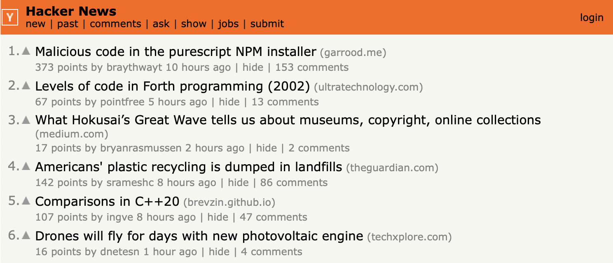
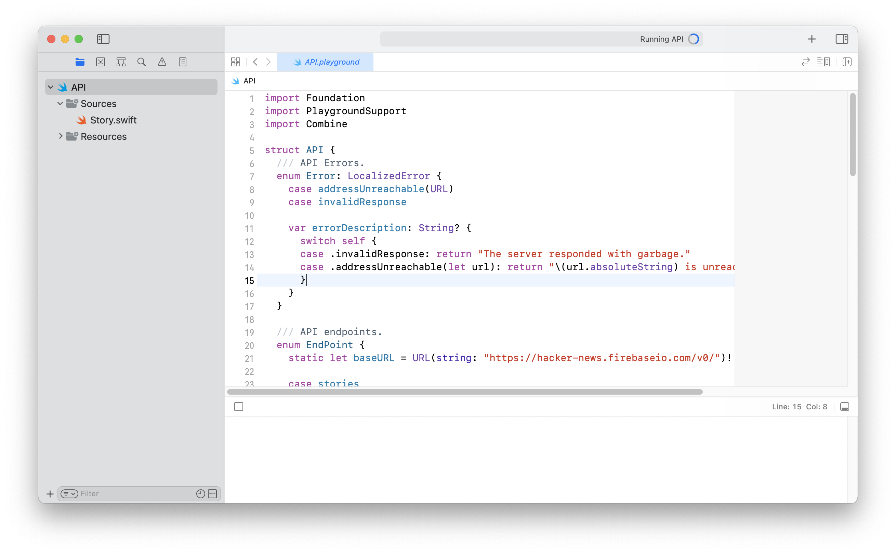
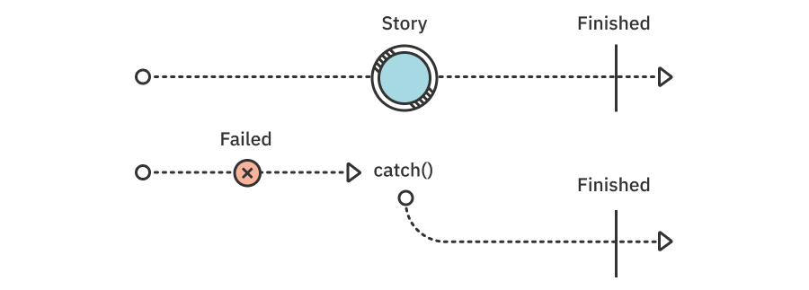
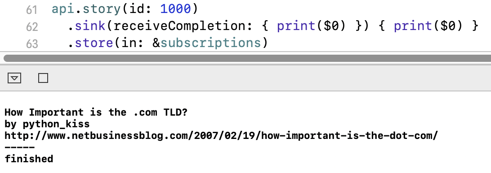
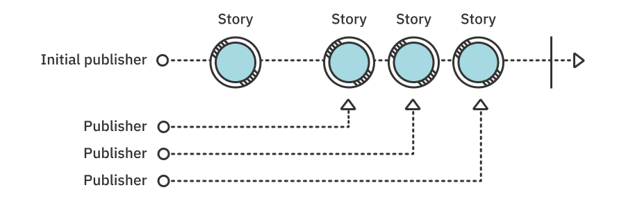
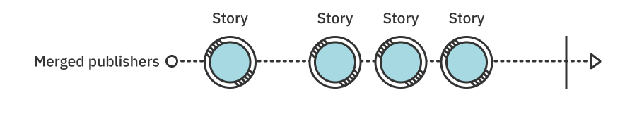
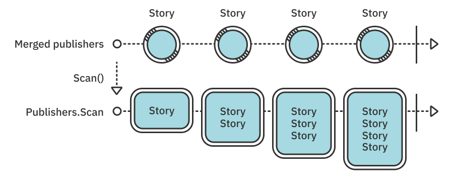
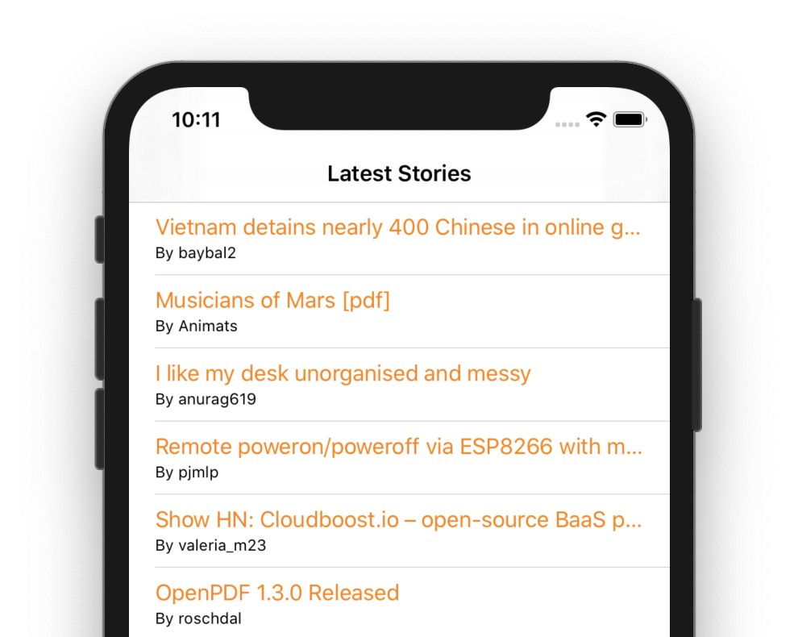

第14章：实践：“新闻”项目¶
在过去的几章中，您了解了组合集成在Foundation类型中的大量实际应用。您学习了如何使用URLSession的数据任务发布者进行网络调用，您看到了如何使用Combine等观察与KVO兼容的对象。
在本章中，您将结合您对操作符的扎实知识与您刚刚发现的一些Foundation集成，并将像上一章中的“实践”一样完成一系列任务。这一次，您将致力于构建黑客新闻API客户端。
“黑客新闻”是一个专注于计算机和创业精神的社交新闻网站，您将在本章中使用其API。如果您还没有，您可以在以下网址查看：https://news.ycombinator.com。

在这一章中，您将在Xcode Playground中工作，只关注API客户端本身。
在第15章“实践中：组合和SwiftUI”中，您将使用完整的API，并通过将网络层插入基于SwiftUI的用户界面来构建真正的黑客新闻阅读器应用程序。在此过程中，您将学习SwiftUI的基础知识，以及如何让您的组合代码与新的声明性苹果框架配合使用，以构建令人惊叹的被动应用程序用户界面。
不用再多说，让我们开始吧！
开始使用黑客新闻API¶
在projects/starter中打开包含的入门Playground API.playground，并窥视内部。您将找到一些简单的入门代码，可帮助您开始运行，并让您专注于仅组合代码：

在API类型中，您将找到两种嵌套的助手类型：
- 一个名为
Error的枚举，其中包含您的API将抛出的两个自定义错误，以防它无法到达服务器或无法解码服务器响应。 - 第二个名为
EndPoint的枚举，其中包含您类型将要连接的两个API端点的URL。
往下走，你会发现maxStories属性。您将使用此功能来限制您的API客户端将获取多少最新故事，以帮助减少黑客新闻服务器上的负载，以及用于解码JSON数据的decoder。
此外，Playground的"Sources"文件夹包含一个名为Story的简单结构，您将将其解码为故事数据。
黑客新闻API可以免费使用，不需要注册开发人员帐户。这很棒，因为您可以立即开始处理代码，而无需像其他公共API一样，首先完成一些长时间的注册。黑客新闻团队赢得了大量的因果报应积分！
得到一个故事¶
您的首要任务是向API添加一种方法，该方法将使用EndPoint类型与服务器联系以获取正确的端点URL，并将获取有关单个故事的数据。新方法将返回API订阅者将订阅的发布者，并获得有效和解析Story或失败。
向下滚动Playground源代码，找到注释，上面写着// Add your API code here。在该行下方，插入一个新的方法声明：
func story(id: Int) -> AnyPublisher<Story, Error> {
return Empty().eraseToAnyPublisher()
}
为了避免Playground中的编译错误，您可以返回一个Empty发布者，该发布者会立即完成。当您完成方法正文的构建时，您将删除表达式并返回新订阅。
如前所述，该发布者的输出是一个Story，其失败是自定义API.Error类型。正如您稍后会看到的，万一出现网络错误或其他事故，您需要将其转换为API.Error案例之一，以匹配预期的返回类型。
通过创建对黑客新闻API单层端点的网络请求，开始对订阅进行建模。在新方法内部，在return语句上方插入：
URLSession.shared
.dataTaskPublisher(for: EndPoint.story(id).url)
您首先向Endpoint.story(id).url提出请求。端点的url属性包含要请求的完整HTTP URL。单层URL如下所示（具有匹配的ID）：https://hacker-news.firebaseio.com/v0/item/12345.json（如果您想预览API响应，请访问https://bit.ly/2nL2ojS。）
接下来，要在后台线程上解析JSON并保持应用程序的其余部分响应，让我们创建一个新的自定义调度队列。story(id:)方法上方的API中添加一个新属性，如下所示：
private let apiQueue = DispatchQueue(label: "API",
qos: .default,
attributes: .concurrent)
您将使用此队列处理JSON响应，因此，您需要将网络订阅切换到该队列。回到story(id:)添加以下行调用dataTaskPublisher(for:)：
.receive(on: apiQueue)
切换到后台队列后，您需要从响应中获取JSON数据。dataTaskPublisher(for:)发布者以元组的形式返回类型(Data, URLResponse)的输出，但对于您的订阅，您只需要数据。
在方法中添加另一行，将当前输出映射到仅映射到结果元组的数据：
.map(\.data)
该操作符的输出类型是Data，您可以将其提供给decode操作符，并尝试将响应转换为Story。
附加到订阅：
.decode(type: Story.self, decoder: decoder)
如果它收到除有效故事JSON以外的任何东西，decode(...)将抛出错误，发布者将以失败完成。
您将在第16章“错误处理”中详细了解错误处理。在本章中，您将使用几个操作符，并体验几种不同的方法来处理错误，但您不会进入事情如何运作的细节。
对于当前story(id:)方法，您将返回一个空的发布者，以防事情因任何原因而发生变化。使用catch操作符很容易做到。添加到订阅中：
.catch { _ in Empty<Story, Error>() }
您忽略抛出的错误并返回Empty()。正如您希望仍然记得的那样，这是一个立即完成的发布者，不会发出任何这样的输出值：

通过catch(_)以这种方式处理上游错误允许您：
- 如果您拿回了一个
Story，请发出数值并完成。 - 返回一个
Empty发布者，该发布者在失败时成功完成，而不发出任何值。
接下来，要包装方法代码并返回设计整齐的发布者，您需要在末尾替换当前订阅。添加：
.eraseToAnyPublisher()
您现在可以删除您之前添加的临时Empty。找到以下行并删除它：
return Empty().eraseToAnyPublisher()
您的代码现在应该毫无问题地编译，但只是为了确保您没有错过所有兴奋的一步，请查看您迄今为止的进度，并确保您完成的代码如下所示：
func story(id: Int) -> AnyPublisher<Story, Error> {
URLSession.shared
.dataTaskPublisher(for: EndPoint.story(id).url)
.receive(on: apiQueue)
.map(\.data)
.decode(type: Story.self, decoder: decoder)
.catch { _ in Empty<Story, Error>() }
.eraseToAnyPublisher()
}
即使您的代码编译，此方法目前仍不会产生任何输出。你接下来就要处理这件事了。
现在，您可以实例化API并尝试调用黑客新闻服务器。
向下滚动一点，找到评论行// Call the API here。这是一个进行测试API调用的好地方。插入以下代码：
let api = API()
var subscriptions = [AnyCancellable]()
通过提供要测试的随机ID来获取故事，方法是添加：
api.story(id: 1000)
.sink(receiveCompletion: { print($0) },
receiveValue: { print($0) })
.store(in: &subscriptions)
您通过调用api.story(id: 1000)创建一个新的发布者，并通过打印任何输出值或完成事件的sink(...)订阅它。为了在请求完成之前保持订阅的活力，您可以将其存储在subscriptions中。
一旦Playground再次运行，它将对hacker-news.firebaseio.com进行网络通话，并在控制台中打印结果：

从服务器返回的JSON数据是一个相当简单的结构，如下：
{
"by":"python_kiss",
"descendants":0,
"id":1000,
"score":4,
"time":1172394646,
"title":"How Important is the .com TLD?",
"type":"story",
"url":"http://www.netbusinessblog.com/2007/02/19/how-important-is-the-dot-com/"
}
Story的Codable一致性解析并存储以下属性的值：by、id、 time、title和url。
请求成功完成后，您将在控制台中看到以下输出，或者如果您更改了请求中的1000值，则会看到类似的输出：
How Important is the .com TLD?
by python_kiss
http://www.netbusinessblog.com/2007/02/19/how-important-is-the-dot-com/
-----
finished
Story类型符合CustomDebugStringConvertible，它有一个customdebugDescription，可以像上面一样整齐地返回标题、作者姓名和故事URL。
输出以finished的完成事件结束。要尝试在出现错误时会发生什么，请将id 1000替换为-5，并在控制台中检查输出。您只会看到finished的打印，因为您捕获了错误并返回了Empty()。
干得好！API类型的第一种方法是完整的，您练习了前几章中涵盖的一些概念，例如调用网络和解码JSON。此外，您还温和地介绍了基本的调度队列切换和一些简单的错误处理。您将在未来的章节中更详细地介绍这些。
尽管这项任务是一项令人难以置信的好练习，但你可能渴望更多。因此，在下一节中，您将更深入地挖掘并放下一些严肃的代码。
通过合并发布者的多个故事¶
从API服务器中获取单个故事是一项相对直接的任务。接下来，您将通过创建自定义发布者来同时获取多个故事来触及您一直在学习的几个概念。
新方法mergeStories(ids:)将为每个给定的故事ID获取一个故事发布者，并将它们合并在一起。 在您之前实现的story(id:)方法之后，将此新方法声明添加到API类型：
func mergedStories(ids storyIDs: [Int]) -> AnyPublisher<Story, Error> {
}
该方法本质上是为每个给定的id调用story(id:)然后将结果扁平化为单个输出值流。
首先，为了减少开发过程中的网络调用次数，您将只从提供的列表中获取第一个 maxStories id。 通过插入以下代码来启动新方法：
let storyIDs = Array(storyIDs.prefix(maxStories))
要开始，请创建第一个发布者：
precondition(!storyIDs.isEmpty)
let initialPublisher = story(id: storyIDs[0])
let remainder = Array(storyIDs.dropFirst())
通过使用story(id:)您可以创建initialPublisher发布者，该发布者使用列表中的第一个id获取故事。
接下来，您将使用Swift标准库中的reduce(_:_:)在剩余的故事ID上将每个下一个故事发布者合并到初始发布者中，如下所示：

要将其余故事减少到初始发布者中，请添加：
return remainder.reduce(initialPublisher) { combined, id in
}
reduce(_:_:)将从初始发布者开始，并将remainder数组中的每个id提供给要处理的闭包。插入此代码，为空闭包中的给定故事id创建一个新的发布者，并将其合并到当前合并结果：
return combined
.merge(with: story(id: id))
.eraseToAnyPublisher()
最终结果是一个发布者，它发出每个成功获取的故事，并忽略每个单层发布者可能遇到的任何错误。
Note
恭喜你，你刚刚创建了MergeMany发布者的自定义实现。不过，自己处理代码并非徒劳无功。您学习了操作符组成，以及如何在现实世界的用例中应用merge和reduce等操作符。
完成新的API方法后，向下滚动到此代码并注释或删除它，以便在测试新代码时加快Playground的执行：
api.story(id: -5)
.sink(receiveCompletion: { print($0) },
receiveValue: { print($0) })
.store(in: &subscriptions)
代替刚刚删除的代码，插入：
api.mergedStories(ids: [1000, 1001, 1002])
.sink(receiveCompletion: { print($0) },
receiveValue: { print($0) })
.store(in: &subscriptions)
使用您最新的代码让Playground再运行一次。这一次，你应该在控制台中看到以下三个故事摘要：
How Important is the .com TLD?
by python_kiss
http://www.netbusinessblog.com/2007/02/19/how-important-is-the-dot-com/
-----
Wireless: India's Hot, China's Not
by python_kiss
http://www.redherring.com/Article.aspx?a=21355
-----
The Battle for Mobile Search
by python_kiss
http://www.businessweek.com/technology/content/feb2007/tc20070220_828216.htm?campaign_id=rss_daily
-----
finished
在你的学习道路上又取得了辉煌的成功，结合起来！在本节中，您编写了一种方法，该方法结合了任意数量的发布者，并将它们简化为单个发布者。这是非常有用的代码，因为内置的merge操作符最多只能合并8个发布者。然而，有时你只是不知道你提前需要多少发布者！
获取最新故事¶
在最后一章中，您将致力于创建一个API方法来获取最新的黑客新闻故事列表。
本章遵循一点模式。首先，您重复使用单故事方法来获取多个故事。现在，您将重复使用多故事方法来获取最新故事的列表。
将新的空方法声明添加到API类型中，如下所示：
func stories() -> AnyPublisher<[Story], Error> {
return Empty().eraseToAnyPublisher()
}
与之前一样，在构建方法主体和发布者时，您返回一个Empty对象，以防止任何编译错误。
然而，与以前不同，这次您返回的发布者的输出是一个故事列表。您将设计发布者以获取多个故事并将其累积到数组中，当响应从服务器传入时发出每个中间状态。
此行为将允许您在下一章中将此新发布者直接绑定到List UI控件，该控件将自动为从服务器进入的故事实时动画。
像以前一样，首先向黑客新闻API发出网络请求。在return语句上方的新方法中插入以下内容：
URLSession.shared
.dataTaskPublisher(for: EndPoint.stories.url)
stories端点允许您点击以下URL以获取最新故事id：https://hacker-news.firebaseio.com/v0/newstories.json。
同样，您需要抓住发射结果的数据组件。因此，通过添加以下内容来映射输出：
.map(\.data)
您将从服务器获得的JSON响应是像这样的简单列表：
[1000, 1001, 1002, 1003]
您需要将列表解析为整数组，如果成功，您可以使用id获取匹配的故事。
附加到订阅：
.decode(type: [Int].self, decoder: decoder)
这将把当前的订阅输出映射到[Int]，您将使用它逐一从服务器获取相应的故事。
然而，现在是回到错误处理话题的时候了。在获取单个故事时，您只需忽略任何错误。但是，在stories()中，让我们看看你如何做得更多一点。
API.Error是您将限制从stories()抛出的错误的错误类型。您有两个错误被定义为枚举案例：
invalidResponse：当您无法将服务器响应解码为预期类型时。addressUnreachable(URL)：当您无法到达端点URL时。
目前，您在 stories() 中的订阅代码可能会引发两种类型的错误：
dataTaskPublisher(for:)当发生网络问题时，可能会抛出URLError的不同变体。decode(type:decoder:)当JSON与预期类型不匹配时，可能会抛出解码错误。
您的下一个任务是以一种将它们映射到单个API.Error类型的方式处理这些不同的错误，以匹配返回的发布者的预期失败。
您将再次抢先一步，并向另一位错误处理操作符提供“软”介绍。在decode后，将此代码附加到您当前的订阅中：
.mapError { error -> API.Error in
switch error {
case is URLError:
return Error.addressUnreachable(EndPoint.stories.url)
default:
return Error.invalidResponse
}
}
mapError处理上游发生的任何错误，并允许您将其映射到单个错误类型——类似于您使用map更改输出类型的方式。
在上面的代码中，您可以切换任何错误和：
- 如果
error类型为URLError，因此在尝试到达stories服务器端点时发生，则返回.addressUnreachable(_) - 否则，您将返回
.invalidResponse作为可能发生错误的唯一其他地方。一旦成功获取，网络响应将解码JSON数据
这样，您就可以匹配 stories() 中的预期故障类型，并可以将其留给API使用者来处理下游错误。 您将在下一章中使用 stories()。 因此，在阅读第16章“错误处理”并深入了解细节之前，您将在错误处理方面做更多工作。
到目前为止，当前的订阅从JSON API中获取了id列表，但除此之外没有做什么。接下来，您将使用一些操作符过滤不需要的内容，并将id列表映射到实际故事。
首先，过滤空结果——以防API发疯并返回其最新故事的空列表。附录：
.filter { !$0.isEmpty }
这将保证下游操作符收到至少包含一个元素的故事id列表。这非常方便，因为正如您所记得的，mergedStories(ids:)有一个先决条件，可以确保其输入参数不是空的。
要使用mergedStories(ids:)并获取故事详细信息，您将通过附加flatMap操作符来扁平化所有故事发布者：
.flatMap { storyIDs in
return self.mergedStories(ids: storyIDs)
}
将所有发布者合并到一个下游将产生连续Story数值流。一旦从网络中获取这些，发布者就会在下游发布这些：

您可以保持当前订阅的原样，但您希望将API设计为易于绑定到列表UI控件。这将允许订阅者简单地订阅stories()并将结果分配给其视图控制器或SwiftUI视图中的[Story]属性。
要实现这一目标，您需要汇总发射的故事并映射订阅以返回不断增长的数组，而不是单个Story值。
是时候进行一些严肃的魔法了！还记得第3章“改造操作符”中的scan操作符吗？我知道那是很久以前的事了，但是，这是帮助您完成当前任务的操作符。因此，如果需要，请跳回到该章，并在刷新scan时回到这里。
附加到您当前的订阅：
.scan([]) { stories, story -> [Story] in
return stories + [story]
}
您让scan(...)开始使用空数组发射。每次发布新故事时，您都会通过stories + [story]将其附加到当前汇总结果中。
订阅代码的这种添加会改变其行为，因此每次收到您正在处理的批次的新故事时，您都会获得缓冲内容：

最后，在发布输出之前对故事进行排序不会有什么坏处。Story符合Comparable，因此您无需实现任何自定义排序。你只需要对结果调用sorted()。附录：
.map { $0.sorted() }
通过删除返回的发布者类型来包装当前相当长的订阅。附上最后一个操作符：
.eraseToAnyPublisher()
此时，您可以找到以下临时退货声明，并删除它：
return Empty().eraseToAnyPublisher()
完成新的API方法后，向下滚动到此代码并注释或删除它以加快Playground的执行，同时测试您的新代码：
api.mergedStories(ids: [1000, 1001, 1002])
.sink(receiveCompletion: { print($0) },
receiveValue: { print($0) })
.store(in: &subscriptions)
取而代之，插入：
api.stories()
.sink(receiveCompletion: { print($0) },
receiveValue: { print($0) })
.store(in: &subscriptions)
此代码订阅api.stories()并打印任何返回的输出和完成事件。
一旦你让Playground再运行一次，你应该会在控制台中看到最新的黑客新闻故事。您会以迭代方式打印列表。最初，你会看到这个故事是第一个独立得到的：
[
More than 70% of America’s packaged food supply is ultra-processed
by xbeta
https://news.northwestern.edu/stories/2019/07/us-packaged-food-supply-is-ultra-processed/
-----]
然后，同一个伴随着第二个故事：
[
More than 70% of America’s packaged food supply is ultra-processed
by xbeta
https://news.northwestern.edu/stories/2019/07/us-packaged-food-supply-is-ultra-processed/
-----,
New AI project expects to map all the word’s reefs by end of next year
by Biba89
https://www.independent.co.uk/news/science/coral-bleaching-ai-reef-paul-allen-climate-a9022876.html
-----]
然后，列出相同的故事，外加第三个故事，依此类以此类之：
[
More than 70% of America’s packaged food supply is ultra-processed
by xbeta
https://news.northwestern.edu/stories/2019/07/us-packaged-food-supply-is-ultra-processed/
-----,
New AI project expects to map all the word’s reefs by end of next year
by Biba89
https://www.independent.co.uk/news/science/coral-bleaching-ai-reef-paul-allen-climate-a9022876.html
-----,
People forged judges’ signatures to trick Google into changing results
by lnguyen
https://arstechnica.com/tech-policy/2019/07/people-forged-judges-signatures-to-trick-google-into-changing-results/
-----]
请注意，由于您正在从黑客新闻网站获取实时数据，因此您在控制台中看到的内容将有所不同，因为每隔几分钟就会添加越来越多的故事。要查看您确实在获取实时数据，请等待几分钟，然后重新运行Playground。你应该看到一些新故事出现在你已经看过的故事旁边。
完成本章这一更长的部分，付出了很大的努力！您已经完成了黑客新闻API客户端的开发，并准备进入下一章。在那里，您将使用SwiftUI构建一个合适的黑客新闻阅读器应用程序。
挑战¶
API客户端本身没有什么可添加的，但如果您想在本章的项目中投入更多工作，您仍然可以玩一会儿。
挑战1：将API客户端与UIKit集成¶
如前所述，在下一章中，您将了解SwiftUI以及如何将其与组合代码集成。
在这个挑战中，尝试构建一个iOS应用程序，该应用程序使用您完成的API客户端在表格视图中显示最新故事。您可以根据需要开发尽可能多的细节，并添加一些样式或有趣的功能，但在这个挑战中练习的要点是订阅API.stories()并将结果绑定到表视图中——就像您在第8章“实践中：项目‘拼贴’”中处理的绑定一样。
如果您对使用UIKit不感兴趣-不用担心，这个挑战只是一个练习，您也可以跳过并首先进入第15章“实践：组合和SwiftUI”。
如果您按照描述成功应对了挑战，那么当您在模拟器或设备上启动应用程序时，您应该会看到最新的故事“倾注”：

关键点¶
Foundation包括几个发布者，这些发布者反映了Swift标准库中的对应方法，您甚至可以像本章中的reduce互换使用它们。- 许多先前存在的
API，如Decodable，也集成了Combine支持。这允许您在所有代码上使用一种标准方法。 - 通过组成组合操作符链，您可以以简化和易于遵循的方式执行相当复杂的操作——特别是与预组合API相比！
接下来去哪？¶
恭喜您完成“行动中的组合”部分！这是一次多么难乘的旅程，不是吗？
您已经了解了Combine基金会提供的大部分内容，所以现在应该在整个Combine框架中专门讨论高级主题的部分中大放大炮了，首先是构建一个同时使用SwiftUI和Combine的应用程序。